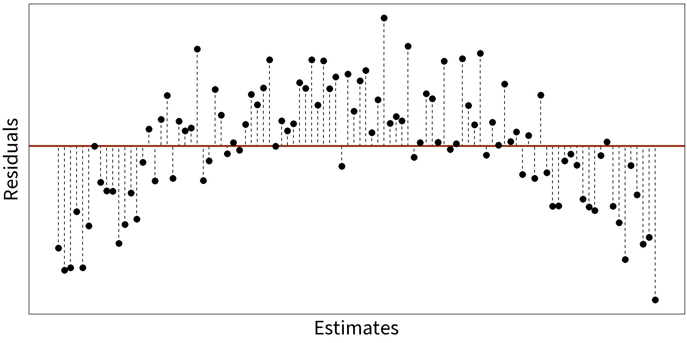
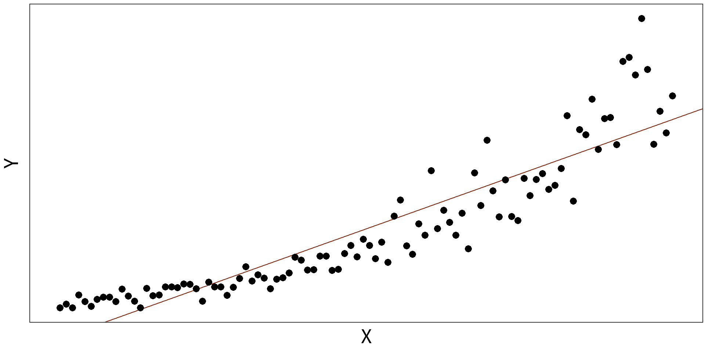

Lecture 10: Transforming Variables
3/14/23
Centering
Model child IQ as a function of mother’s IQ.
Model child IQ as a function of mother’s IQ.

Centering will make intercept more interpretable.
To center, subtract the mean:
\[\text{Mom's IQ} - \text{mean(Mom's IQ)}\]
That gets us this model…
Now we interpret the intercept as expected IQ of a child for a mother with mean IQ. (Notice change in standard error!)
Scaling
Model fuel efficiency as a function of weight and horse power.
Question Which covariate has a bigger effect?

Problem Cannot directly compare coefficients on different scales.
Solution Convert variable values to their z-scores:
\[z_i = \frac{x_i-\bar{x}}{\sigma_{x}}\]
All coefficients now give change in \(y\) for 1\(\sigma\) change in \(x\).
Interactions

Question What if the relationship between child’s IQ and mother’s IQ depends on the mother’s educational attainment?
Simple formula becomes:
\[y_i = (\beta_0 + \gamma D) + (\beta_1x_1 + \omega D x_1) + \epsilon_i\]
With
- \(\gamma\) giving the change in \(\beta_0\) and
- \(\omega\) giving the change in \(\beta_1\).
That’s a change in intercept and a change in slope!
Polynomial transformations for non-linearity
Simple Linear Model: \(y_{i} = \beta_{0} + \beta_{1}X + \epsilon_{i}\)
\(R^2 = 0.3088\)

Quadratic Model: \(y_{i} = \beta_{0} + \beta_{1}X + \beta_{2}X^{2} + \epsilon_{i}\)
\(R^2=0.7636\)

Log transformations for non-linearity
Simple Linear Model: \(y_{i} = \beta_{0} + \beta_{1}X + \epsilon_{i}\)
\(R^2 = 0.8325\)

Log Linear Model: \(log(y_{i}) = \beta_{0} + \beta_{1}X + \epsilon_{i}\)
\(R^2 = 0.9407\)